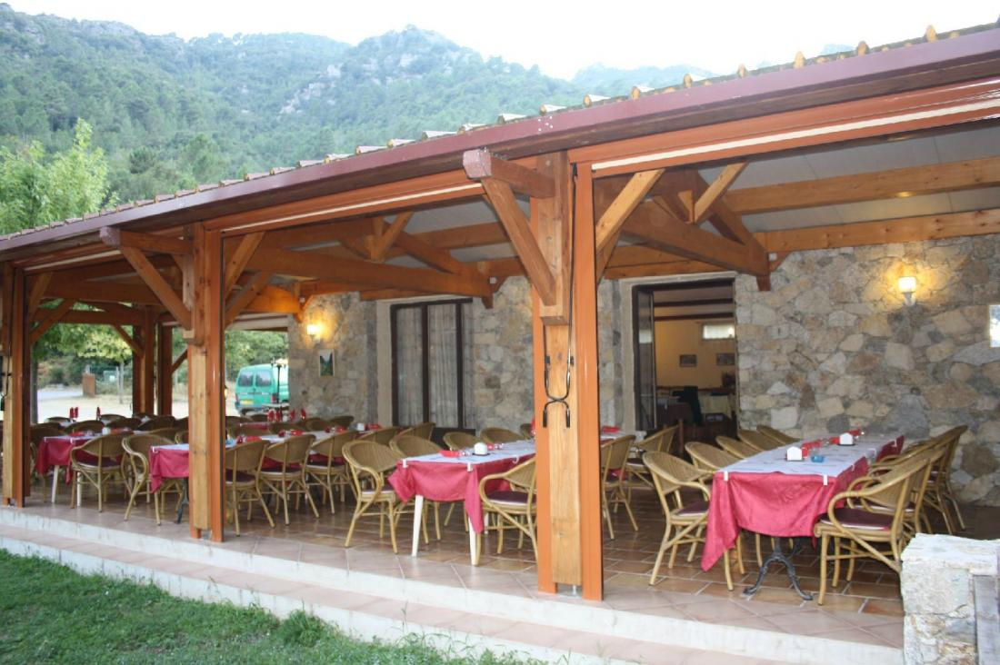
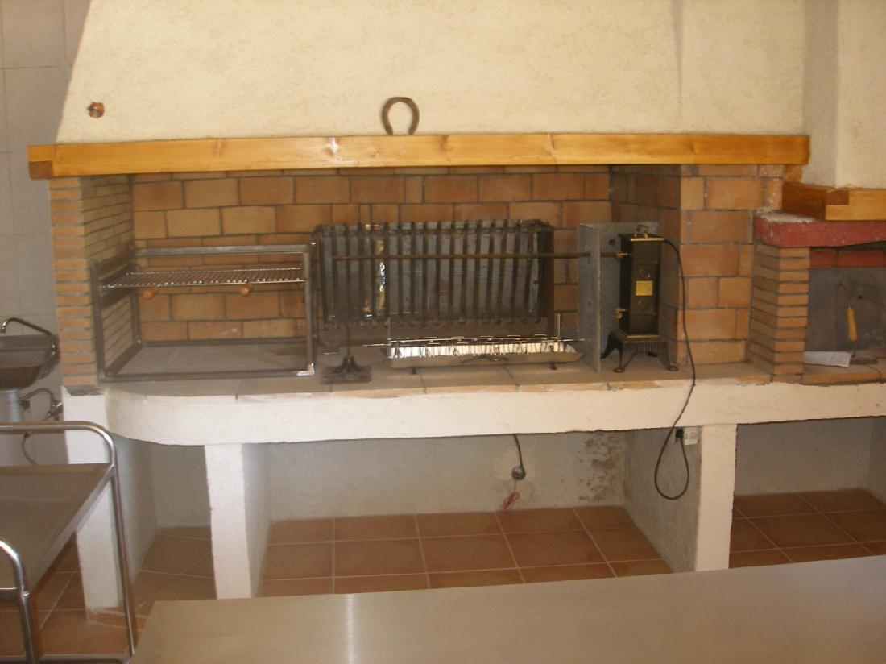
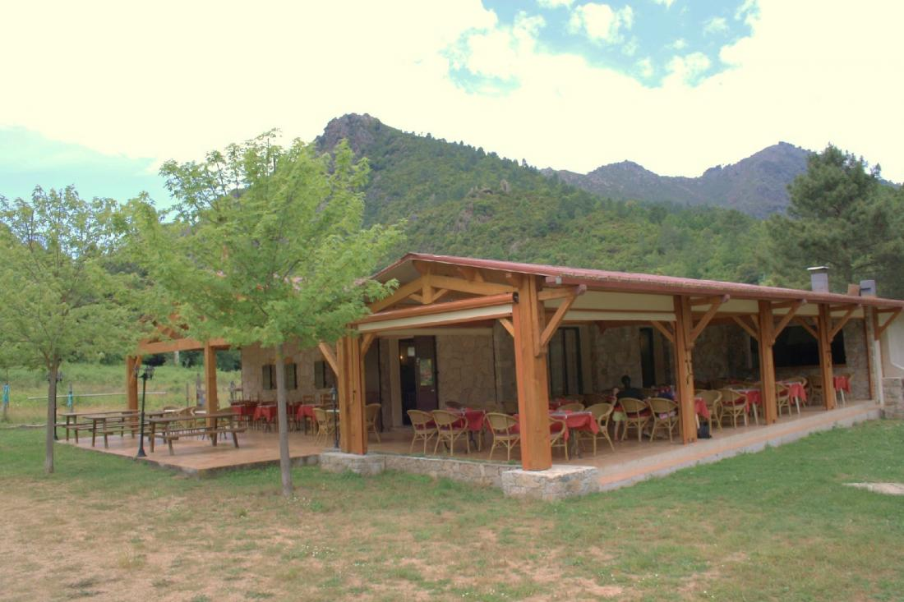
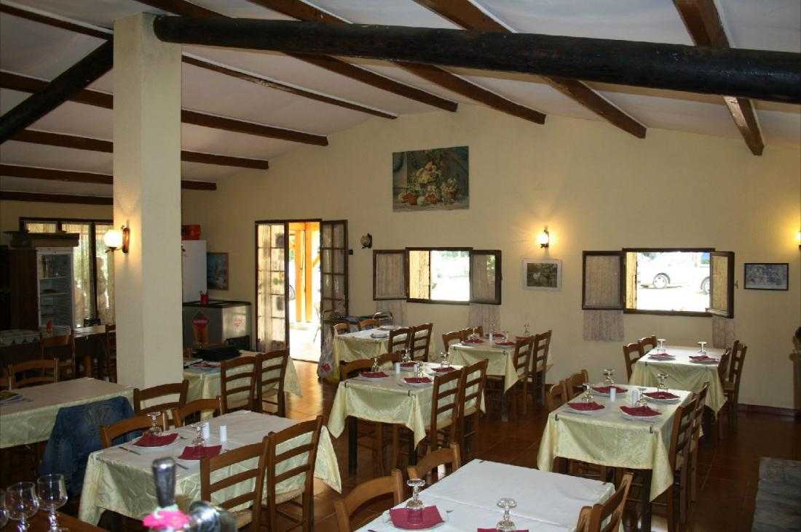
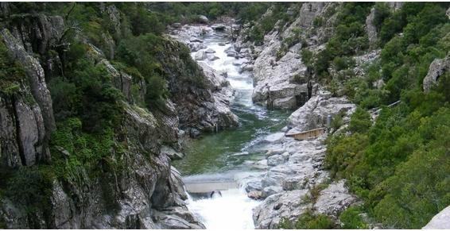
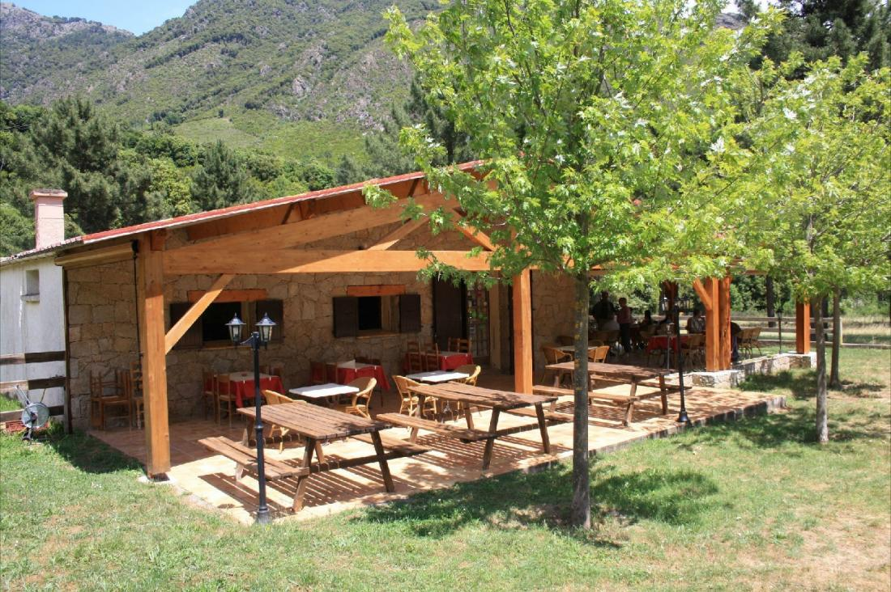

Benvenuti à U Sampolu
La cuisine corse de la ferme, au bord de la rivière.
Entre le défilé de l'Inzecca et celui des Strette, notre ferme auberge vous reçoit en terrasse ou en salle, avec les produits de la ferme et des viandes grillées au feu de bois, sous vos yeux.
Feu de boisviandes grillées sous vos yeux
50 couvertsen salle, et la terrasse
Le Routardnous recommande

Pour finir le repas« Un petit digestif offert par la maison, et c'est déjà l'heure de la sieste. »
Ouvert de mai à septembre
Juillet et août : tous les jours, midi et soir.Mai, juin et septembre : tous les jours sauf le lundi et le mardi soir.
JFMAMJJASOND
De la ferme à l'assiette, dans le respect de la tradition
Une cuisine corse traditionnelle, à base de produits locaux et des produits de notre ferme. La charcuterie, les terrines et les desserts sont faits maison.

Un endroit calme, baigné de verdure
En terrasse ou à l'intérieur, un endroit convivial pour déjeuner ou dîner et découvrir la Corse et sa cuisine.




- Groupes bienvenus, sur réservation
- Grand parking gratuit
- Terrasse et salle
Sur la route de Ghisonaccia à Ghisoni
Dans la région de la Costa Serena, non loin d'Aléria, au lieu-dit Sampolo, entre le défilé de l'Inzecca et celui des Strette.
- Ghisonaccia
- Défilé de l'Inzecca
- U Sampolu
- Défilé des Strette
- Ghisoni
Réserver
04 95 57 60 18 veronique.comptour@wanadoo.frPour les groupes, la réservation est conseillée.